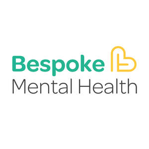
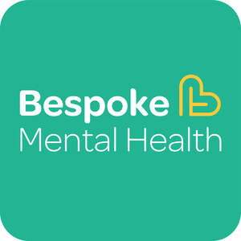

Trade Mark Journal No.2025/025 20 June 2025
UK00004214545 5 June 2025 (41,44)
Mark 1

Mark 2

- Class 41
- Education; Vocational education; Health education; Education and training; Education services; Education, teaching and training; Vocational education and training services; Training and education services; Education and training services; Provision of training and education; Provision of education and training; Providing of education; Education services relating to vocational training; Education and training consultancy; Online education services; Education services relating to health; Educational and teaching services; Educational and training services relating to healthcare; Training; Training and further training consultancy; Training courses; Vocational training; Training and instruction; Training consultancy; Training services; Vocational skills training; Organisation of training courses; Organisation of training; Providing of training; Providing training; Providing courses of training; Provision of training courses; Training courses (Provision of -); Provision of training; Career and vocational training; Conducting workshops [training]; Vocational training services; Arranging of training courses; Adult training; Vocational training courses (Provision of -); Workshops for training purposes; Vocational skills training (Provision of -); Educational and training services; Arranging professional workshop and training courses; Consultancy relating to vocational skills training; Staff training services; Providing online training seminars; Providing of training, teaching and tuition; Educational consultancy; Educational consultancy services; Consultancy services relating to training.
- Class 44
- Health consultancy; Healthcare consultancy services; Advisory services relating to health care; Professional consultancy relating to health care; Consulting services relating to health care; Consultancy services relating to health care; Advisory services relating to health; Professional consultancy relating to health.
Bespoke Mental Health Ltd